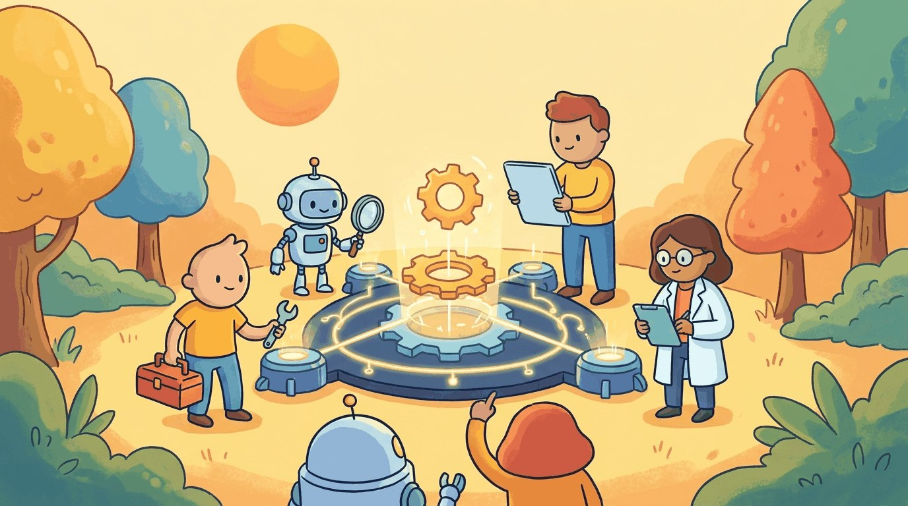

"A jack of all trades is a master of none, but oftentimes better than a master of one."
Agent X, Versatile AI Agent
Chapters 26-28 covered agents as a general pattern. This chapter zooms in on the specializations that actually ship: code agents (Cursor, Claude Code, Devin), browser agents (web navigation, form-filling), research agents (deep research, Open Deep Research), and the benchmarks that measure them (SWE-bench, WebArena, GAIA). The patterns here are the most production-grade in the book.
Chapter Overview
In late 2025, Anthropic's Claude Code passed 60 percent on SWE-bench Verified, the benchmark of real-world GitHub issues that two years earlier had seemed unreachable. Cursor agents now run autonomously on multi-file pull requests; Anthropic's Computer Use models book travel by clicking buttons; OpenAI's Deep Research compiles 30-source literature reviews in under ten minutes. None of these systems are general agents. They are specialists, tuned for one domain, with prompt scaffolding, custom tools, and evaluation benchmarks that look nothing alike. This chapter is the field guide to which specialization wins which task, and which scaffolds you can copy into your own product.
The chapter also covers domain-specific agent design patterns for healthcare, legal, finance, and customer service, where compliance constraints, safety requirements, and domain knowledge integration demand careful architectural choices. It concludes with a detailed examination of AI-generated code quality, security vulnerabilities, and trust calibration strategies for human-AI collaboration in software engineering.
While Chapters 26 through 28 cover general agent principles, this chapter focuses on domain-specific agent types: coding assistants, research agents, data analysis agents, and more. Understanding specialization patterns helps you design agents that excel at specific tasks rather than being mediocre generalists.
- Design code generation agent architectures using self-debugging loops, test-driven development, and SWE-bench evaluation patterns
- Build browser and web agents using Playwright MCP, Stagehand, and WebArena-style task automation
- Implement computer use agents with screenshot-based reasoning, GUI automation, and desktop interaction using Anthropic Computer Use
- Construct research and data analysis agents for literature review, scientific discovery workflows, and data pipeline automation
- Apply domain-specific agent design patterns for healthcare, legal, finance, and customer service with appropriate compliance constraints
- Evaluate AI-generated code quality using static analysis tools (CodeQL, Semgrep, Bandit) and establish trust calibration for code review
Prerequisites
- Chapter 26: AI Agent Foundations (agent architectures, memory, planning)
- Chapter 27: Tool Use, Function Calling & Protocols (function calling, MCP, tool design)
- Chapter 11: LLM APIs (chat completions, streaming, structured outputs)
- Experience building at least one simple agent or tool-calling pipeline
Sections
- 29.1 Code Generation Agents: Patterns and Architectures Architectural patterns for code agents: self-debug loop, plan-then-execute, tree-of-code, multi-agent code review, and SWE-bench evaluation. (Production vendor landscape lives in 29.4.) Entry
- 29.2 Browser & Web Agents Most of the world's workflows live behind web interfaces, not APIs. Intermediate
- 29.3 Research & Data Analysis Agents Research and data analysis agents turn the agentic loop into a systematic investigation process. Advanced
- 29.4 Production Agentic Coding Systems (2026) The 2026 vendor landscape: Claude Code, OpenAI Codex, Cursor, Windsurf, Aider, Devin, GitHub Copilot Workspace. Architecture comparison and tool-selection guidance. (Patterns live in 29.1.) Advanced
Objective
Implement a browser-using agent (Anthropic's computer_use or browser-use Python library) that opens a real website, navigates multiple pages, and submits a form. By the end you will see why computer-use agents are so much harder than tool-use agents, and where the failure modes cluster.
Steps
- Step 1: Pick a target. Use a benign sandbox:
the-internet.herokuapp.com(Sauce Labs test playground). Specifically the "Multiple Windows" + "Form Authentication" pages. - Step 2: Install browser-use.
pip install browser-use playwright.playwright install chromium. Run their hello-world (a Google search via LLM). - Step 3: Single-tab task. Write: "Log in at /login with username 'tomsmith' and password 'SuperSecretPassword!'. Confirm success." Run with
browser-usebacked by GPT-4o. Watch the trace; capture screenshots at each step. - Step 4: Multi-tab task. Extend to: "Open /windows, click the link, then come back and report what page title you saw." The agent must manage two tabs.
- Step 5: Failure analysis. Run the same task 5 times. Tally success rate. Open 2 failures: was it a click target that changed, a hallucination ("I see a button" that does not exist), or a wrong tab? This is where computer-use research lives.
- Step 6: Library alternative. Try the same task with Anthropic's
computer_useAPI (pixel-based). Compare reliability and cost per task. The DOM-based and pixel-based approaches have different failure modes.
Expected Output
Expected time: 3 to 4 hours. Difficulty: intermediate. Artifact: a benchmarked browser agent with success-rate logs.
What's Next?
Next: Chapter 30: Tools of the Trade, Agent Stack. Chapter 30 closes Part VI with the consolidated agentic toolbox: LangGraph, LlamaIndex agents, CrewAI, AutoGen, OpenAI Agents SDK, Anthropic's claude-agent-sdk, the MCP registry, agent observability stacks (Langfuse, AgentOps), and the eval rigs for trajectory-level testing. Then Part VII attacks the agent's biggest weakness so far: it can plan and act, but it does not know things outside its training data. Retrieval changes that.